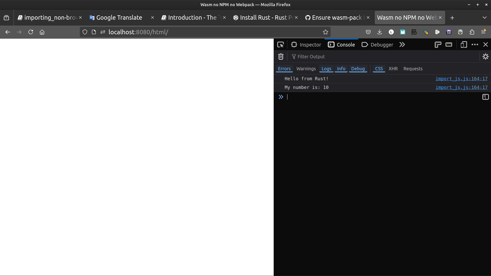

Importing non-browser JS
The #[wasm_bindgen] attribute can be used on extern "C" { .. } blocks to import functionality from JS.
This is how the js-sys and the web-sys crates are built, but you can also use it in your own crate!
_ [wasm-bindgen Guide]
Original [wasm-bindgen example]
PART I. Make it run
Converting Examples in 7 steps
1. Make the file structure
cargo new import_js --lib
cd import_js
mkdir -p www/html www/js
2. Edit Cargo.toml, add crate-type and wasm-bindgen dependency
[package]
name = "import_js"
version = "0.1.0"
edition = "2021"
[lib]
crate-type = ["cdylib"]
[dependencies]
wasm-bindgen = "0.2.88"
3. Get the code
Cut and paste the import-js example from github [src/lib.rs]
or the rust code in [wasm-bindgen: import-js]
Note:
We need to modify `#[wasm_bindgen(module = "/defined-in-js.js")]`
as we made the commitment not to mix Rust and web code.
Our version will have `defined-in-js.js` in the `js` directory
with our `index.js` file.
#![allow(unused)] fn main() { #[wasm_bindgen(module = "/www/js/defined-in-js.js")] ... }
So the full code is :
#![allow(unused)] fn main() { // src/lib.rs use wasm_bindgen::prelude::*; // our webserver's root is www #[wasm_bindgen(module = "/www/js/defined-in-js.js")] extern "C" { fn name() -> String; type MyClass; #[wasm_bindgen(constructor)] fn new() -> MyClass; #[wasm_bindgen(method, getter)] fn number(this: &MyClass) -> u32; #[wasm_bindgen(method, setter)] fn set_number(this: &MyClass, number: u32) -> MyClass; #[wasm_bindgen(method)] fn render(this: &MyClass) -> String; } // lifted from the `console_log` example #[wasm_bindgen] extern "C" { #[wasm_bindgen(js_namespace = console)] fn log(s: &str); } #[wasm_bindgen(start)] fn run() { log(&format!("Hello from {}!", name())); // should output "Hello from Rust!" let x = MyClass::new(); assert_eq!(x.number(), 42); x.set_number(10); log(&x.render()); } }
4. create the index file at www/html/index.html:
<!DOCTYPE html>
<html>
<head>
<meta charset="UTF-8">
<title>Wasm no NPM no Webpack</title>
</head>
<body>
<script type="module" src="../js/index.js"></script>
</body>
</html>
5. The first js file is index.js
// www/js/index.js
import init from "../pkg/import_js.js";
async function run() {
const wasm = await init();
}
run();
Our second javascript file defined-in-js.js
// www/js/defined-in-js.js
export function name() {
return 'Rust';
}
export class MyClass {
constructor() {
this._number = 42;
}
get number() {
return this._number;
}
set number(n) {
return this._number = n;
}
render() {
return `My number is: ${this.number}`;
}
}
6. build it
wasm-pack build --target web --no-typescript --out-dir www/pkg
7. serve it
http www
open index.html
firefox http://localhost:8000/html/
Open the browser at http://127.0.0.1:8000/html/
and ctrl-shift + I to see the output in the browsers console log

PART II. Understand the Code
Understand the Code
#![allow(unused)] fn main() { // our webserver's root is www #[wasm_bindgen(module = "/www/js/defined-in-js.js")] extern "C" { fn name() -> String; type MyClass; #[wasm_bindgen(constructor)] fn new() -> MyClass; #[wasm_bindgen(method, getter)] fn number(this: &MyClass) -> u32; #[wasm_bindgen(method, setter)] fn set_number(this: &MyClass, number: u32) -> MyClass; #[wasm_bindgen(method)] fn render(this: &MyClass) -> String; } }
We made the commitment not to mix Rust and web code.
As such, defined-in-js.js is in the js directory with our index.jsfile.
The original code looks for this file next to the Cargo.toml file at the root directory with
#[wasm_bindgen(module = "/defined-in-js.js")]
extern "C" {
...
}
...
We point it to www/js/ instead, like this:
#![allow(unused)] fn main() { #[wasm_bindgen(module = "/www/js/defined-in-js.js")] extern "C" { ... } ... }
Find more about:
-
module = "..."
[wasm-bindgen docs: attributes] -
"The #[wasm_bindgen] attribute can be used on extern "C" { .. } blocks to import functionality from JS."
[wasm-bindgen docs: Importing non-browser JS]
Using a Js function from Rust
#![allow(unused)] fn main() { // lifted from the `console_log` example #[wasm_bindgen] extern "C" { #[wasm_bindgen(js_namespace = console)] fn log(s: &str); } }
Here we are making use of Javascript's console.log() method.
[wasm-bindgen docs: js_namespace]
#![allow(unused)] fn main() { #[wasm_bindgen(start)] fn run() { log(&format!("Hello from {}!", name())); // should output "Hello from Rust!" let x = MyClass::new(); assert_eq!(x.number(), 42); x.set_number(10); log(&x.render()); } }
- The
runfunction here should be started up automatically when the wasm module is loaded.
[wasm-bindgen docs: start]